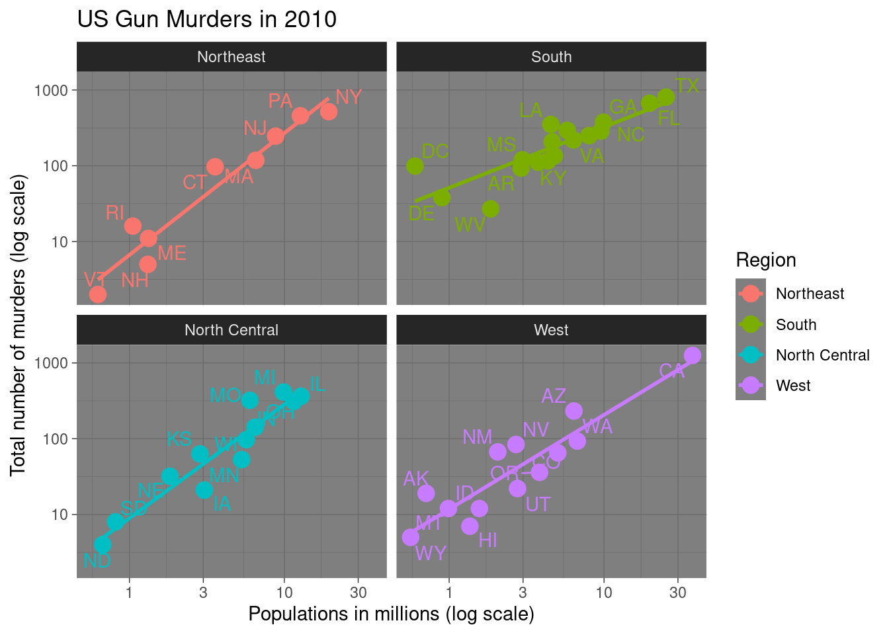
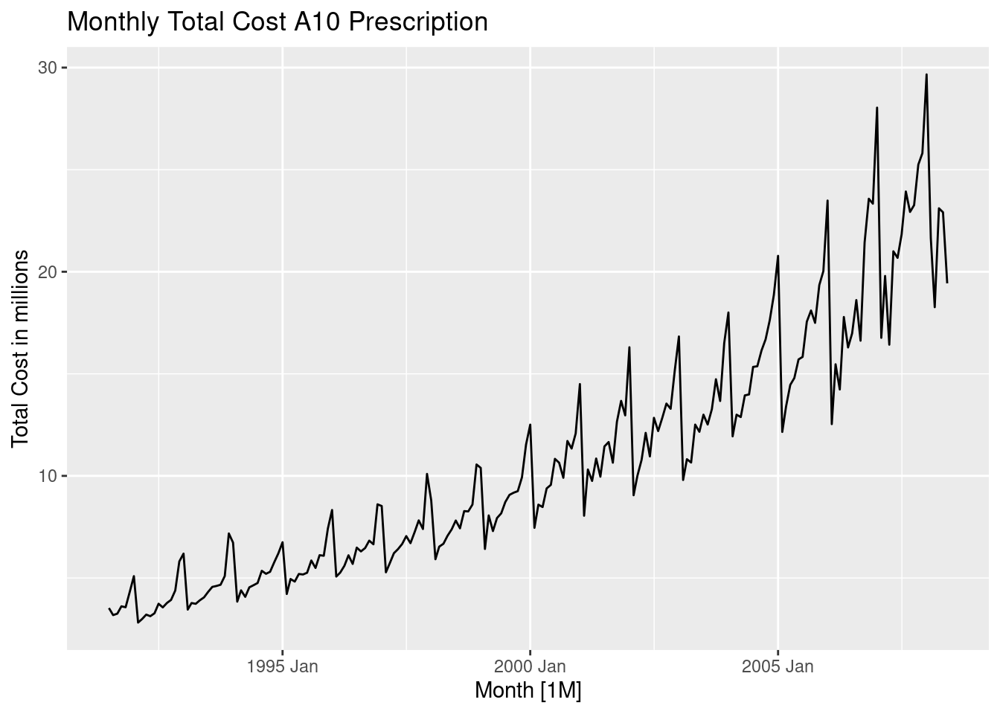
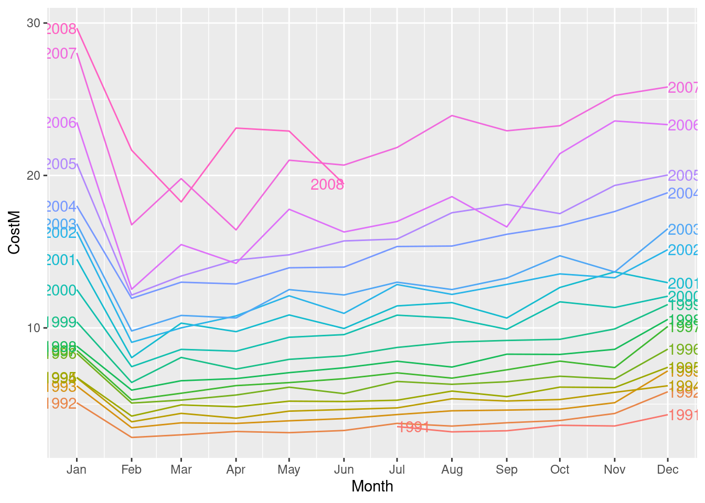
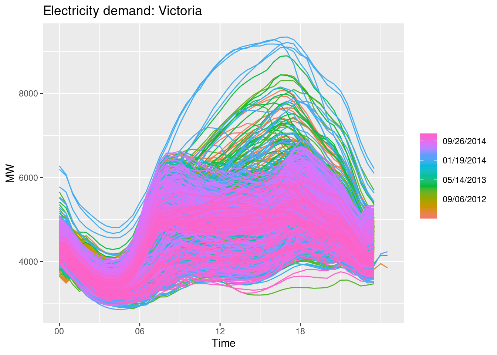
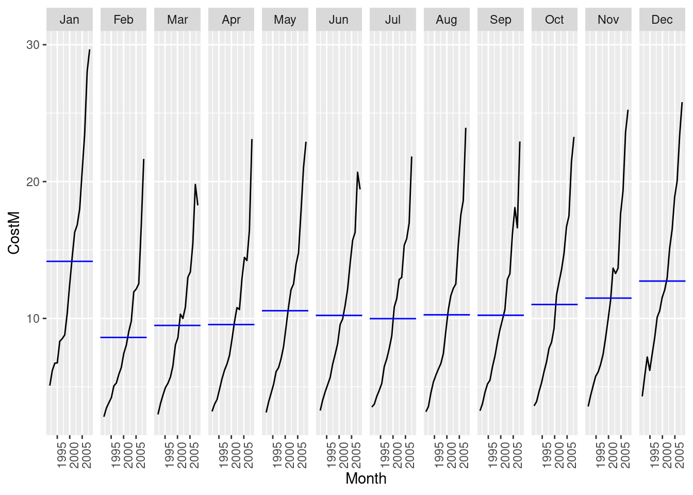
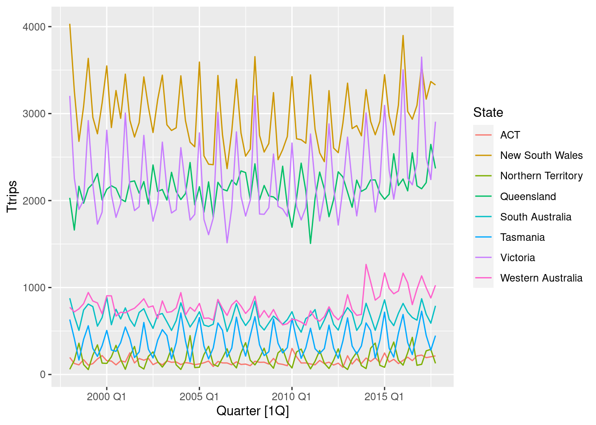
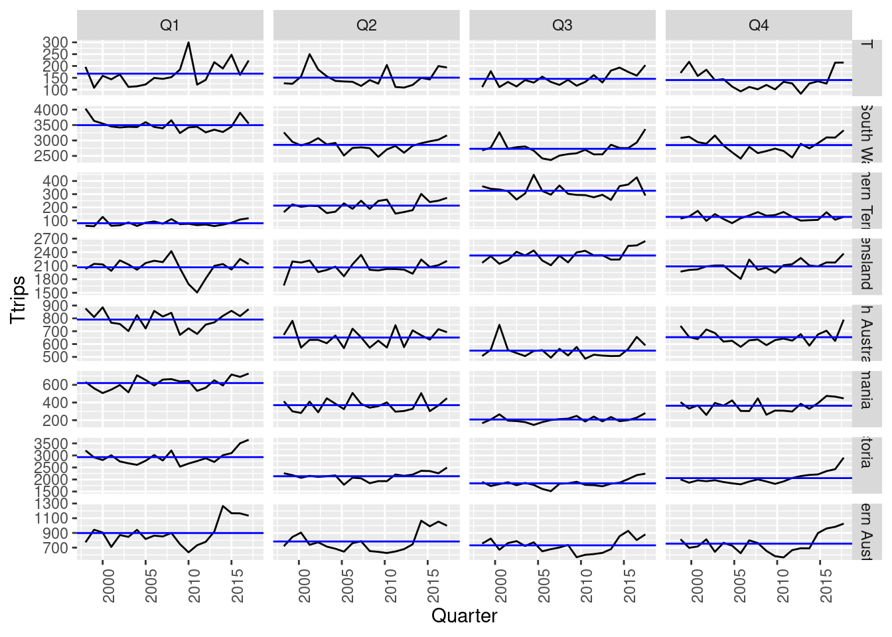
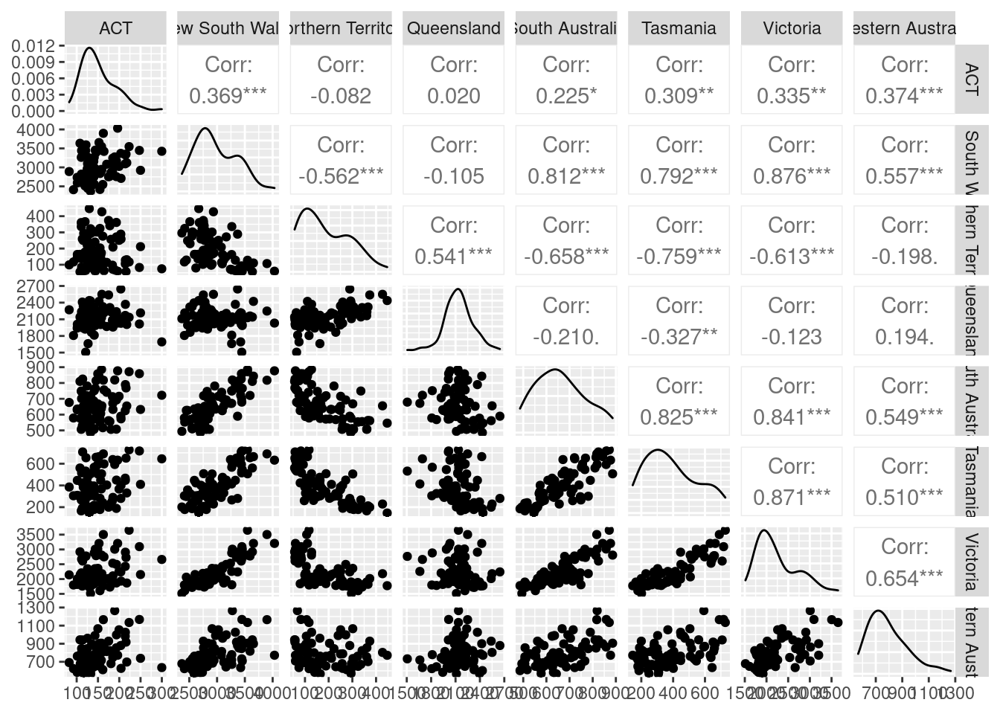
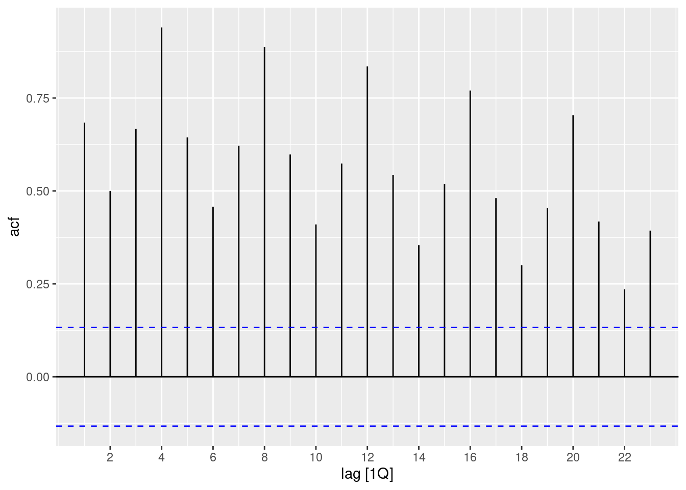
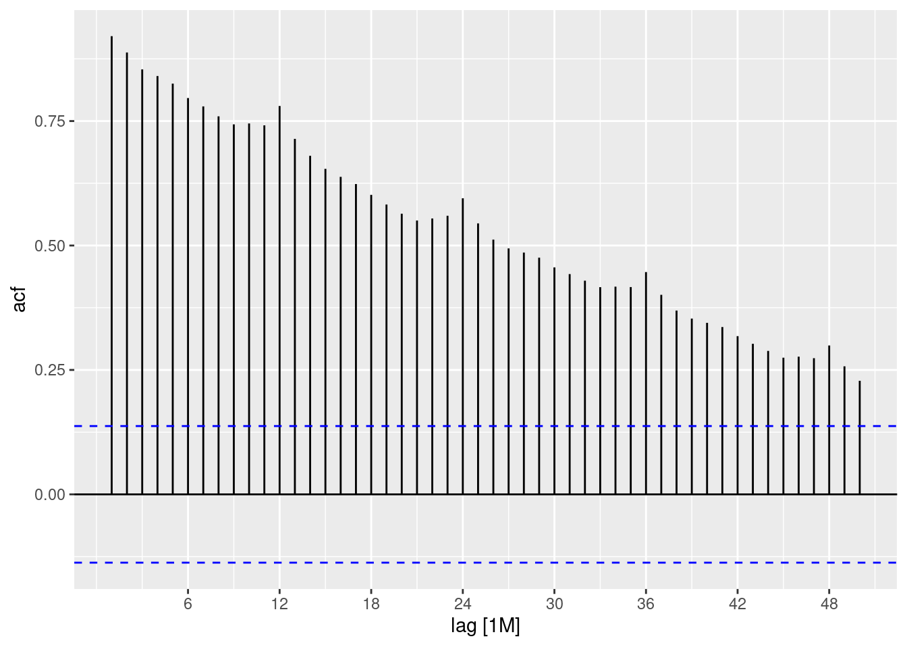

library(tidyverse)
library(dslabs)
library(ggthemes)
library(ggrepel)
library(tsibble)
library(tsibbledata)
library(feasts)Introduction to R + Time Series
Loading packages
Tidyverse packages
The tidyverse is collection of R packages designed for data science.
dyplr: manipulating data.framepurrr: working with functionsggplot2: visualizationtidydata: each row represents one observation and columns represent variables.
Tidy Data
data(murders)
data("co2")
data("ChickWeight")
data("relig_income")
head(murders) state abb region population total
1 Alabama AL South 4779736 135
2 Alaska AK West 710231 19
3 Arizona AZ West 6392017 232
4 Arkansas AR South 2915918 93
5 California CA West 37253956 1257
6 Colorado CO West 5029196 65Working with Data.frame
# add a variable/column
murders = mutate(murders, rate=total/population*100000)
head(murders) state abb region population total rate
1 Alabama AL South 4779736 135 2.824424
2 Alaska AK West 710231 19 2.675186
3 Arizona AZ West 6392017 232 3.629527
4 Arkansas AR South 2915918 93 3.189390
5 California CA West 37253956 1257 3.374138
6 Colorado CO West 5029196 65 1.292453# subsetting with filter
filter(murders, rate < 0.7) state abb region population total rate
1 Hawaii HI West 1360301 7 0.5145920
2 Iowa IA North Central 3046355 21 0.6893484
3 New Hampshire NH Northeast 1316470 5 0.3798036
4 North Dakota ND North Central 672591 4 0.5947151
5 Vermont VT Northeast 625741 2 0.3196211# select variable
new_table = select(murders, state, region, rate)
filter(new_table, rate <0.7) state region rate
1 Hawaii West 0.5145920
2 Iowa North Central 0.6893484
3 New Hampshire Northeast 0.3798036
4 North Dakota North Central 0.5947151
5 Vermont Northeast 0.3196211The pipe operator%>%. With dplyr we can do a series of operations, for example select and then filter using the pipe operator.
murders %>%
select(state,region,rate) %>%
filter(rate<0.7) state region rate
1 Hawaii West 0.5145920
2 Iowa North Central 0.6893484
3 New Hampshire Northeast 0.3798036
4 North Dakota North Central 0.5947151
5 Vermont Northeast 0.3196211# change rate threshold
murders %>%
select(state, region, rate) %>%
filter(rate < 0.5) state region rate
1 New Hampshire Northeast 0.3798036
2 Vermont Northeast 0.3196211# change select variables
murders %>%
select(abb, region, rate) %>%
filter(rate <0.7) abb region rate
1 HI West 0.5145920
2 IA North Central 0.6893484
3 NH Northeast 0.3798036
4 ND North Central 0.5947151
5 VT Northeast 0.3196211# How it works
25 %>%
sqrt() %>%
log2()[1] 2.321928log2(sqrt(25))[1] 2.321928Summarizing data
data(heights)
# computes the average and standard deviation for females:
avg_sd = heights %>%
filter(sex=="Female") %>%
summarise(avg=mean(height),sdt=sd(height))
avg_sd avg sdt
1 64.93942 3.760656Let’s compute the average murder rate of the USA. Recall that the USA murder rate is not the average of the state murder rates.
murders %>%
summarise(States.Avg.rate = mean(rate)) States.Avg.rate
1 2.779125murders %>%
summarise(US.murder.rate=sum(total)/sum(population)*100000) US.murder.rate
1 3.034555Data Grouping
tibble: many tables same columns but not necessarily the same number of rows
heights %>%
group_by(sex) %>%
summarise(avg= mean(height),std=sd(height))# A tibble: 2 × 3
sex avg std
<fct> <dbl> <dbl>
1 Female 64.9 3.76
2 Male 69.3 3.61# let's compute the median murder rate in the four regions of the country:
murders %>%
group_by(region) %>%
summarise(median.rate=median(rate))# A tibble: 4 × 2
region median.rate
<fct> <dbl>
1 Northeast 1.80
2 South 3.40
3 North Central 1.97
4 West 1.29# apply the same function to each element of a vector
compute_s_n <- function(n){
x <- 1:n
sum(x)
}
sn = map_dbl(c(1,5,10,15,20), compute_s_n)Visualization using ggplot2
murders %>%
ggplot(aes(x=population/10^6,y=total,col=region)) +
geom_point(size=4)+
geom_text_repel(aes(label=abb))+
scale_x_log10()+
scale_y_log10()+
geom_smooth(method=lm,se=FALSE)+
labs(x="Populations in millions (log scale)",
y="Total number of murders (log scale)",
title = "US Gun Murders in 2010")+
scale_color_discrete(name = "Region") +
facet_wrap(~region)+
theme_dark()
Time Series using R
tsibble: A time series can be thought of as a list of numbers (the measurements), along with some information about what times those numbers were recorded (the index). This information can be stored as a tsibble object in R.
y = tsibble(
Year = 2010:2019,
Observation = c(13, 85, 2502, 200, 50,45,48,49,69,6),
index = Year
)
y# A tsibble: 10 x 2 [1Y]
Year Observation
<int> <dbl>
1 2010 13
2 2011 85
3 2012 2502
4 2013 200
5 2014 50
6 2015 45
7 2016 48
8 2017 49
9 2018 69
10 2019 6tsibble extends tibble (tidy data frames) to time series. We have set the time series index to be the Year column. Suppose we have more frequent data, say monthly data
z = data.frame(date = c("2021 Jan","2021 Feb"," 2021 Mar"," 2021 Apr","2021 May"),observation = c(52, 39, 78, 47, 747))
z date observation
1 2021 Jan 52
2 2021 Feb 39
3 2021 Mar 78
4 2021 Apr 47
5 2021 May 747z1 = z %>%
mutate(Month = yearmonth(date)) %>%
as_tsibble(index = Month)
z1# A tsibble: 5 x 3 [1M]
date observation Month
<chr> <dbl> <mth>
1 "2021 Jan" 52 2021 Jan
2 "2021 Feb" 39 2021 Feb
3 " 2021 Mar" 78 2021 Mar
4 " 2021 Apr" 47 2021 Apr
5 "2021 May" 747 2021 Maytsibble allows multiple time series to be stored. Let’s look at the Olympics data set containing the fastest running times for women’s and men’s track races from 100m to 10000m. We have a tsibble object with:
[4y] indicates that the interval of these obs. is every 4 years.
Key line: indicates 14 separate time series
The 14 time series are identified by the KEYS: Length and Sex.
The
distinct()function can be used to show them
library(tsibbledata)
olympic_running # A tsibble: 312 x 4 [4Y]
# Key: Length, Sex [14]
Year Length Sex Time
<int> <int> <chr> <dbl>
1 1896 100 men 12
2 1900 100 men 11
3 1904 100 men 11
4 1908 100 men 10.8
5 1912 100 men 10.8
6 1916 100 men NA
7 1920 100 men 10.8
8 1924 100 men 10.6
9 1928 100 men 10.8
10 1932 100 men 10.3
# … with 302 more rowsolympic_running %>%
distinct(Length)# A tibble: 7 × 1
Length
<int>
1 100
2 200
3 400
4 800
5 1500
6 5000
7 10000Working on tsibble objects:
data(PBS)
# Let's look at the Cost time series
costa10 = PBS %>%
filter(ATC2=="A10") %>%
select(Cost) %>%
summarise(TotalC = sum(Cost)) %>%
mutate(CostM=TotalC/1e6)
autoplot(costa10,CostM) +
labs(title = "Monthly Total Cost A10 Prescription",
y="Total Cost in millions")
Season plot
costa10 %>%
gg_season(CostM,labels = "both") 
Multiple seasonal periods:
| Data | Day | Week | Year |
|---|---|---|---|
| Quarters | 4 | ||
| Months | 12 | ||
| Weeks | 52 | ||
| Days | 7 | 365 | |
| Hours | 24 | 168 | 8766 |
Data 1/2 hour electricity demand for Victoria
vic_elec %>%
gg_season(Demand, period = "day") +
labs(y="MW", title="Electricity demand: Victoria")
vic_elec # A tsibble: 52,608 x 5 [30m] <Australia/Melbourne>
Time Demand Temperature Date Holiday
<dttm> <dbl> <dbl> <date> <lgl>
1 2012-01-01 00:00:00 4383. 21.4 2012-01-01 TRUE
2 2012-01-01 00:30:00 4263. 21.0 2012-01-01 TRUE
3 2012-01-01 01:00:00 4049. 20.7 2012-01-01 TRUE
4 2012-01-01 01:30:00 3878. 20.6 2012-01-01 TRUE
5 2012-01-01 02:00:00 4036. 20.4 2012-01-01 TRUE
6 2012-01-01 02:30:00 3866. 20.2 2012-01-01 TRUE
7 2012-01-01 03:00:00 3694. 20.1 2012-01-01 TRUE
8 2012-01-01 03:30:00 3562. 19.6 2012-01-01 TRUE
9 2012-01-01 04:00:00 3433. 19.1 2012-01-01 TRUE
10 2012-01-01 04:30:00 3359. 19.0 2012-01-01 TRUE
# … with 52,598 more rows#Subseries
costa10 %>%
gg_subseries(CostM)
??tourism
h=tourism %>%
filter(Purpose=="Holiday") %>%
group_by(State) %>%
summarise(Ttrips = sum(Trips))
h# A tsibble: 640 x 3 [1Q]
# Key: State [8]
State Quarter Ttrips
<chr> <qtr> <dbl>
1 ACT 1998 Q1 196.
2 ACT 1998 Q2 127.
3 ACT 1998 Q3 111.
4 ACT 1998 Q4 170.
5 ACT 1999 Q1 108.
6 ACT 1999 Q2 125.
7 ACT 1999 Q3 178.
8 ACT 1999 Q4 218.
9 ACT 2000 Q1 158.
10 ACT 2000 Q2 155.
# … with 630 more rowsautoplot(h,Ttrips)
To see the timing of the seasonal peaks
gg_season(h, Ttrips) + labs(y = "Overnight trips", title = "Australian holidays")
gg_subseries(h,Ttrips)
h %>%
pivot_wider(values_from=Ttrips, names_from=State) %>%
GGally::ggpairs(columns = 2:9)
Autocorrelation Function
aus_production %>%
ACF(Beer) %>%
autoplot() 
costa10 %>%
ACF(CostM, lag_max = 50) %>%
autoplot()